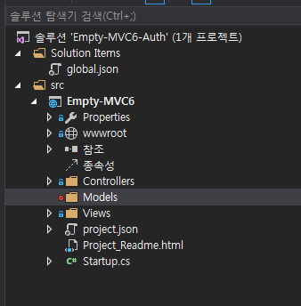
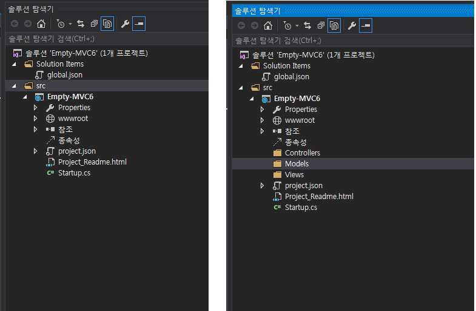
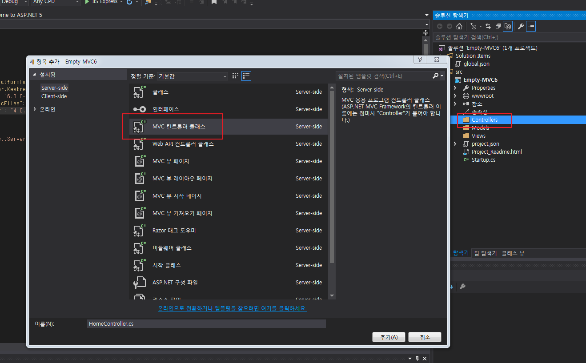
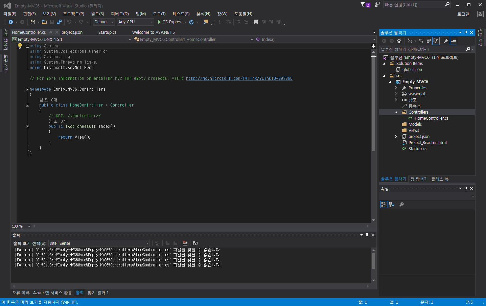
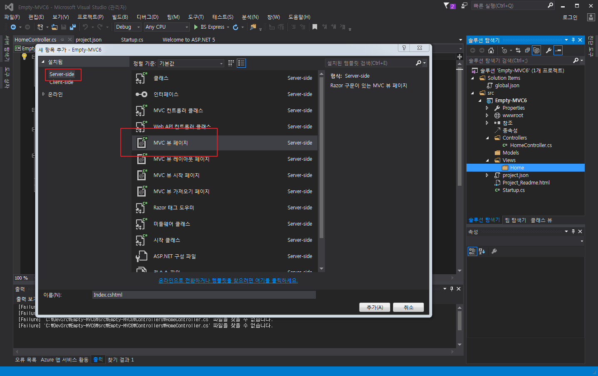
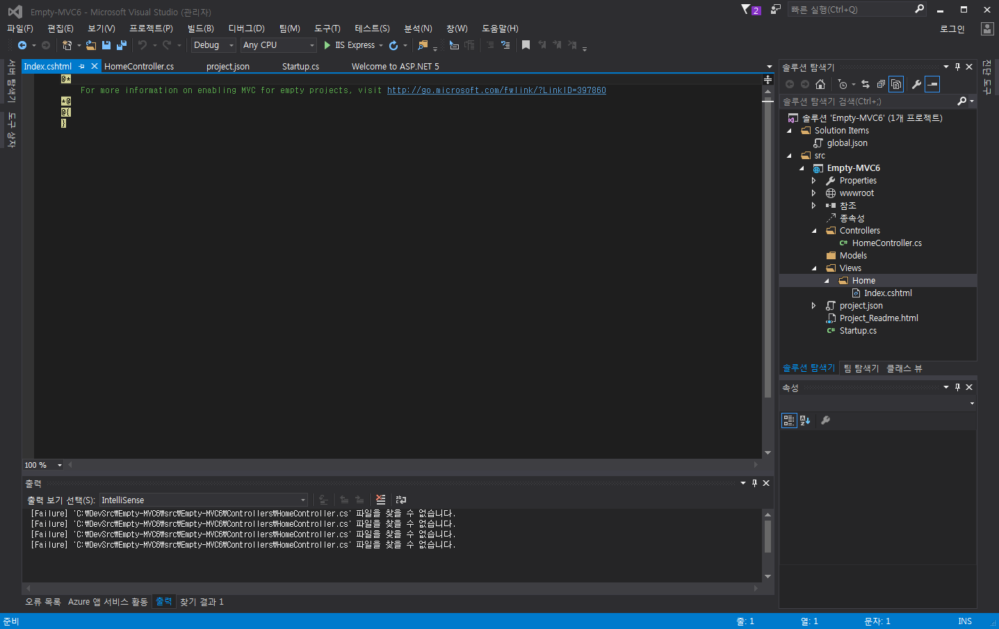
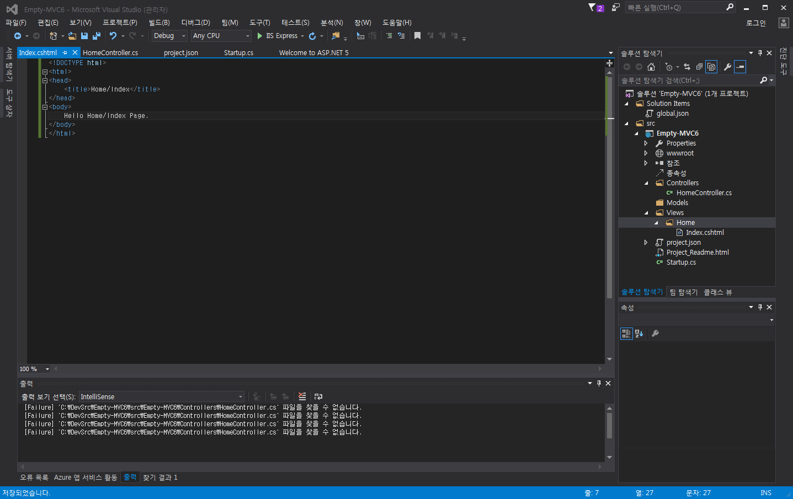
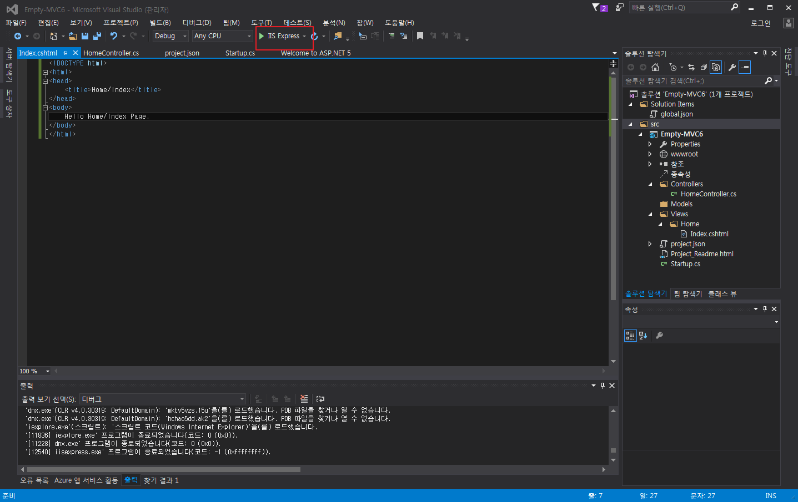
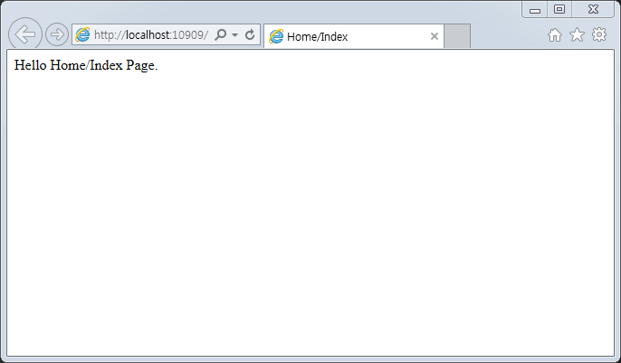

MVC6에 인증 추가하기
ASP.NET5 MVC6 시작하기 에서 이어집니다.
Created by 정태원
프로젝트 준비
기존 솔루션 복사해서 솔루션 이름만 변경
project.json 수정
"Microsoft.AspNet.Authorization": "1.0.0-rc1-final"
"Microsoft.AspNet.Authentication.Cookies": "1.0.0-rc1-final"
{
"version": "1.0.0-*",
"compilationOptions": {
"emitEntryPoint": true
},
"dependencies": {
"Microsoft.AspNet.IISPlatformHandler": "1.0.0-rc1-final",
"Microsoft.AspNet.Server.Kestrel": "1.0.0-rc1-final",
"Microsoft.AspNet.Mvc": "6.0.0-rc1-final",
"Microsoft.AspNet.StaticFiles": "1.0.0-rc1-final",
"Microsoft.AspNet.Razor": "4.0.0-rc1-final",
"Microsoft.AspNet.Authorization": "1.0.0-rc1-final",
"Microsoft.AspNet.Authentication.Cookies": "1.0.0-rc1-final"
},
"commands": {
"web": "Microsoft.AspNet.Server.Kestrel"
},
"frameworks": {
"dnx451": { },
"dnxcore50": { }
},
"exclude": [
"wwwroot",
"node_modules"
],
"publishExclude": [
"**.user",
"**.vspscc"
]
}
Startup.cs 수정
서비스가 시작될때 실행되는 각종 설정을 관리.
using System;
using System.Collections.Generic;
using System.Linq;
using System.Threading.Tasks;
using Microsoft.AspNet.Builder;
using Microsoft.AspNet.Hosting;
using Microsoft.AspNet.Http;
using Microsoft.Extensions.DependencyInjection;
namespace Empty_MVC6
{
public class Startup
{
// This method gets called by the runtime. Use this method to add services to the container.
// For more information on how to configure your application, visit http://go.microsoft.com/fwlink/?LinkID=398940
public void ConfigureServices(IServiceCollection services)
{
}
// This method gets called by the runtime. Use this method to configure the HTTP request pipeline.
public void Configure(IApplicationBuilder app)
{
app.UseIISPlatformHandler();
app.Run(async (context) =>
{
await context.Response.WriteAsync("Hello World!");
});
}
// Entry point for the application.
public static void Main(string[] args) => WebApplication.Run<Startup>(args);
}
}
ConfigureServices 메소드 수정
public void ConfigureServices(IServiceCollection services)
{
// MVC 기능을 사용하기 위해 서비스 등록
services.AddMvc();
}
Configure 메소드 수정
public void Configure(IApplicationBuilder app)
{
app.UseIISPlatformHandler();
// Static 파일의 사용을 위해
app.UseStaticFiles();
// 기본적인 MVC Routing 처리를 위해
app.UseMvc().UseMvcWithDefaultRoute();
}
프로젝트 구조 변경
Controllers, Models, Views 폴더 추가
Default MVC Routing 규칙
{controller=Home}/{action=Index}/{id?}
HomeController.cs, Home/Index.cshtml 필요
Controller 추가
HomeController 추가
HomeController 확인
View 추가
Home 폴더 추가

Index.cshtml 추가
Index.cshtml 확인
Index.cshtml 수정
확인
서버실행
성공!
Action 추가하기
HomeController에 Menu method 추가
// GET: /Home/Menu
public IActionResult Menu()
{
return View();
}